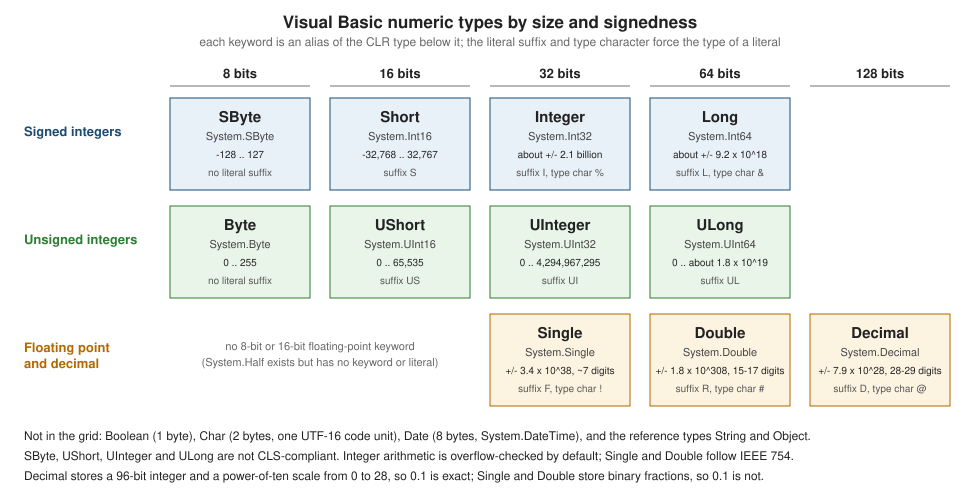

Data Types and Literals
|
This content was generated with the assistance of AI and should be verified against the official documentation before being relied on in production. |
This page is written against Visual Basic 17.13 on .NET 10 (SDK 10.0.402) and was checked on 2026-10-19. Every value in a
Visual Basic program has a type, and every type is a .NET type: the sixteen keywords of the language (Integer, Double, String and
the rest) are aliases of types in the System namespace, and anything that can be done with a CLR type can be done
with them. The language adds a notation for literals, a family of conversion rules and a handful of behaviours that differ
from C# (overflow checking, the Date keyword, the meaning of Nothing). The page is organised around those: the table of
elementary types, user-defined types, value versus reference semantics and boxing, the literal forms, the behaviour of numbers, the
type of arithmetic results, and finally guidance, differences and history.
Conversions between the types are the subject of Type Conversions; the Option
statements that decide how strictly types are checked are on
Option Statements; strings in depth on
Strings and Text, dates on
Dates, Times and Formatting, nullable value types and
Nothing on Nothing and Nullable Value Types, and
numeric functions on Numbers and Math.
Every example is a complete program of the shelf library-catalogue scenario, built with Option Strict On and warnings as errors on the
.NET 10 SDK and run; the output shown is the real one. Deliberately wrong files are labelled and show the compiler’s messages instead.
The elementary types
The following figure arranges the numeric types by size and signedness, with their CLR names, ranges and literal suffixes. The text that follows covers the remaining types.

The next program prints the whole table from the running types: keyword, CLR type, storage size in bytes (measured with
Unsafe.SizeOf), default value and range. Nothing in the output is typed in except the range of String and Object; the
rest comes from MinValue, MaxValue and the type objects.
Option Strict On
Imports System.Globalization
Imports System.Runtime.CompilerServices
Module Program
Private Sub Row(Of T)(keyword As String, minimum As String, maximum As String)
Dim inv As CultureInfo = CultureInfo.InvariantCulture
Dim size As String = If(GetType(T).IsValueType, Unsafe.SizeOf(Of T)().ToString(inv), "ref")
Dim zero As T = Nothing
Dim boxed As Object = zero
Dim shown As String
If boxed Is Nothing Then
shown = "Nothing"
ElseIf TypeOf boxed Is Char Then
shown = "U+" & AscW(DirectCast(boxed, Char)).ToString("X4", inv)
ElseIf TypeOf boxed Is Date Then
shown = DirectCast(boxed, Date).ToString("yyyy-MM-dd HH:mm:ss", inv)
Else
shown = Convert.ToString(boxed, inv)
End If
Console.WriteLine(keyword.PadRight(9) & GetType(T).FullName.PadRight(16) & size.PadLeft(4) & " " & shown.PadRight(20) & minimum & " .. " & maximum)
End Sub
Sub Main()
Dim inv As CultureInfo = CultureInfo.InvariantCulture
Console.WriteLine("keyword CLR type bytes default min .. max")
Row(Of Boolean)("Boolean", "False", "True")
Row(Of Byte)("Byte", Byte.MinValue.ToString(inv), Byte.MaxValue.ToString(inv))
Row(Of SByte)("SByte", SByte.MinValue.ToString(inv), SByte.MaxValue.ToString(inv))
Row(Of Short)("Short", Short.MinValue.ToString(inv), Short.MaxValue.ToString(inv))
Row(Of UShort)("UShort", UShort.MinValue.ToString(inv), UShort.MaxValue.ToString(inv))
Row(Of Integer)("Integer", Integer.MinValue.ToString(inv), Integer.MaxValue.ToString(inv))
Row(Of UInteger)("UInteger", UInteger.MinValue.ToString(inv), UInteger.MaxValue.ToString(inv))
Row(Of Long)("Long", Long.MinValue.ToString(inv), Long.MaxValue.ToString(inv))
Row(Of ULong)("ULong", ULong.MinValue.ToString(inv), ULong.MaxValue.ToString(inv))
Row(Of Single)("Single", Single.MinValue.ToString("E3", inv), Single.MaxValue.ToString("E3", inv))
Row(Of Double)("Double", Double.MinValue.ToString("E3", inv), Double.MaxValue.ToString("E3", inv))
Row(Of Decimal)("Decimal", Decimal.MinValue.ToString(inv), Decimal.MaxValue.ToString(inv))
Row(Of Char)("Char", "U+0000", "U+FFFF")
Row(Of Date)("Date", Date.MinValue.ToString("yyyy-MM-dd", inv), Date.MaxValue.ToString("yyyy-MM-dd", inv))
Row(Of String)("String", "0 chars", "about 1 billion chars")
Row(Of Object)("Object", "-", "-")
End Sub
End Modulekeyword CLR type bytes default min .. max
Boolean System.Boolean 1 False False .. True
Byte System.Byte 1 0 0 .. 255
SByte System.SByte 1 0 -128 .. 127
Short System.Int16 2 0 -32768 .. 32767
UShort System.UInt16 2 0 0 .. 65535
Integer System.Int32 4 0 -2147483648 .. 2147483647
UInteger System.UInt32 4 0 0 .. 4294967295
Long System.Int64 8 0 -9223372036854775808 .. 9223372036854775807
ULong System.UInt64 8 0 0 .. 18446744073709551615
Single System.Single 4 0 -3.403E+038 .. 3.403E+038
Double System.Double 8 0 -1.798E+308 .. 1.798E+308
Decimal System.Decimal 16 0 -79228162514264337593543950335 .. 79228162514264337593543950335
Char System.Char 2 U+0000 U+0000 .. U+FFFF
Date System.DateTime 8 0001-01-01 00:00:00 0001-01-01 .. 9999-12-31
String System.String ref Nothing 0 chars .. about 1 billion chars
Object System.Object ref Nothing - .. -Source: Data Type Summary
Notes on the table:
-
Booleanis one byte in the CLR, although Learn lists its storage as platform-dependent. Its two values areTrueandFalse. Converted to a number,Truebecomes -1 andFalse0 (see the section onBooleanbelow). -
Byteis unsigned (0 to 255) andSBytesigned, the reverse of the Java names. The unsigned typesSByte,UShort,UIntegerandULongwere added in Visual Basic 2005 and are not CLS-compliant, so a public member that uses them cannot be consumed by every .NET language. UseIntegerandLongat public boundaries. -
SingleandDoubleare IEEE 754 binary floating point with about 7 and 15 to 17 significant decimal digits. The ranges Learn gives start at the smallest denormal,4.94065645841246544E-324forDouble; the table above prints the largest magnitudes only. -
Decimalis a 128-bit decimal type: a 96-bit integer, a sign, and a power-of-ten scale from 0 to 28. It is exact for decimal fractions such as 0.1 and is the type for money (see below). -
Charis one UTF-16 code unit (2 bytes), not a Unicode scalar value. Characters outside the Basic Multilingual Plane take two `Char`s. -
DateisSystem.DateTime: 8 bytes holding a count of 100-nanosecond ticks from midnight on 0001-01-01 up to 9999-12-31.DateTimehas a keyword in Visual Basic and none in C#. The default value is0001-01-01 00:00:00, not a missing date. -
StringandObjectare reference types; the size shown asrefis the size of the reference (8 bytes on a 64-bit process). AStringholds up to about a billion UTF-16 code units in practice; Learn’s text says "approximately two billion". -
VB6 fixed-length strings (
Dim s As String * 10) do not exist in Visual Basic .NET. AStringis always variable-length and immutable. -
The
DecimalandDaterows show that the default value of every value type is the all-bits-zero value, which is whatNothingproduces when it is assigned to one (see the section onNothing).
Types without a keyword
Several numeric types of the base class library have no Visual Basic keyword and no literal form. They are used by name
and built through constructors, Parse or conversion operators:
| Type | Namespace | Notes |
|---|---|---|
|
|
128-bit integers since .NET 7. There are no suffixes, so a value larger than |
|
|
16-bit IEEE floating point since .NET 5. Used for GPU and machine-learning data. |
|
|
Arbitrary-size integer. Reference |
|
|
Pointer-sized integers. Visual Basic has no |
|
|
A Unicode scalar value. Use it where a |
|
|
Common value types with no keyword. |
Source: Numerics in .NET
User-defined types
The elementary types are the vocabulary; programs add their own with five declaration statements. They all produce types that
derive from System.Object, and they split into value and reference types exactly as the built-in ones do.
| Statement | Kind | Default value | Base type |
|---|---|---|---|
|
Value type; copied on assignment; cannot inherit. |
All fields zero ( |
|
|
Value type with an integral underlying type ( |
Zero, even when no member has the value 0. |
|
|
Reference type. |
|
|
|
A contract; a variable of the type holds a reference to an implementing object. |
|
None. |
|
Reference type that holds a method reference. |
|
|
Source: Composite Data Types
The following program declares one of each, with the shelf domain’s names, and asks the runtime about them and about their default values:
Option Strict On
Enum LoanState As Byte
Available = 1
OnLoan = 2
Overdue = 3
End Enum
Structure Isbn
Public ReadOnly Digits As String
Public Sub New(digits As String)
Me.Digits = digits
End Sub
End Structure
Class Book
Public Title As String = ""
End Class
Interface ILendable
Sub Lend(borrower As String)
End Interface
Delegate Function TitleFilter(book As Book) As Boolean
Module Program
Private Sub Describe(kind As String, t As Type)
Dim baseName As String = If(t.BaseType Is Nothing, "(none)", t.BaseType.Name)
Console.WriteLine(kind.PadRight(10) & t.Name.PadRight(13) & "value type: " & t.IsValueType.ToString().PadRight(6) & " base: " & baseName)
End Sub
Sub Main()
Describe("Enum", GetType(LoanState))
Describe("Structure", GetType(Isbn))
Describe("Class", GetType(Book))
Describe("Interface", GetType(ILendable))
Describe("Delegate", GetType(TitleFilter))
Describe("Array", GetType(Integer()))
Dim state As LoanState = Nothing
Dim isbn As Isbn = Nothing
Dim book As Book = Nothing
Dim filter As TitleFilter = Nothing
Console.WriteLine("defaults: " & CInt(state).ToString() & " (no member has value 0), Digits Is Nothing = " & (isbn.Digits Is Nothing).ToString() &
", book Is Nothing = " & (book Is Nothing).ToString() & ", filter Is Nothing = " & (filter Is Nothing).ToString())
Console.WriteLine("underlying type of LoanState: " & [Enum].GetUnderlyingType(GetType(LoanState)).Name & ", ToString of 0 = " & state.ToString())
End Sub
End ModuleEnum LoanState value type: True base: Enum
Structure Isbn value type: True base: ValueType
Class Book value type: False base: Object
Interface ILendable value type: False base: (none)
Delegate TitleFilter value type: False base: MulticastDelegate
Array Int32[] value type: False base: Array
defaults: 0 (no member has value 0), Digits Is Nothing = True, book Is Nothing = True, filter Is Nothing = True
underlying type of LoanState: Byte, ToString of 0 = 0Source: Enum Statement
Two lines deserve attention. The enumeration LoanState was declared with As Byte and explicit values starting at 1, so
the default value of a LoanState variable, 0, is not a member: it prints as 0. Always give an enumeration a zero member, or check
with [Enum].IsDefined, as the page on
Enumerations explains. And the structure’s reference field Digits is
Nothing in a default-initialised Isbn, because a structure always has an implicit parameterless initialisation that skips
Sub New; this is why a structure should be designed so that its all-zero state is valid (see
Structures and Value Types).
Arrays are reference types whatever their element type (Integer() has the base type Array).
Value types and reference types
A value type variable holds the data itself: assigning copies the data, passing it ByVal copies it, and the default value is all zero.
All numeric types, Boolean, Char, Date, every Structure and every Enum are value types. A reference type variable holds a reference
to an object on the managed heap: assigning copies the reference, two variables can name the same object, and the default is Nothing.
String, Object, arrays, classes, interfaces and delegates are reference types. String is a reference type that behaves like a
value: it is immutable, and the = operator compares its contents.
The next program shows the difference with the shelf types: a ShelfSlot structure and a Book class, then boxing and the
ways to ask for a type.
Option Strict On
Structure ShelfSlot
Public Row As Integer
Public Column As Integer
Public Overrides Function ToString() As String
Return "R" & Row.ToString() & "C" & Column.ToString()
End Function
End Structure
Class Book
Public Title As String = ""
Public Slot As ShelfSlot
End Class
Module Program
Sub Move(ByVal slot As ShelfSlot)
slot.Row = 99
End Sub
Sub Rename(ByVal book As Book)
book.Title = "Renamed"
End Sub
Sub Main()
' Value types are copied on assignment; reference types share one object.
Dim first As New ShelfSlot With {.Row = 1, .Column = 2}
Dim second As ShelfSlot = first
second.Row = 5
Console.WriteLine("value copy: " & first.ToString() & " vs " & second.ToString())
Move(first)
Console.WriteLine("ByVal struct: " & first.ToString())
Dim dune As New Book With {.Title = "Dune"}
Dim alias1 As Book = dune
alias1.Title = "Dune Messiah"
Rename(dune)
Console.WriteLine("reference: " & dune.Title & " / " & alias1.Title & " / same object: " & (dune Is alias1).ToString())
' A structure inside a class lives inside the object; copying the field copies the structure.
dune.Slot.Row = 3
Dim copy As ShelfSlot = dune.Slot
copy.Row = 8
Console.WriteLine("field vs copy: " & dune.Slot.ToString() & " vs " & copy.ToString())
' Boxing: assigning a value type to Object allocates a box that holds a copy.
Dim number As Integer = 42
Dim boxA As Object = number
Dim boxB As Object = number
number = 43
Console.WriteLine("boxed value kept: " & boxA.ToString() & ", " & (boxA Is boxB).ToString() & ", " & boxA.Equals(boxB).ToString())
Console.WriteLine("unboxed: " & DirectCast(boxA, Integer).ToString())
Try
Dim wrong As Long = DirectCast(boxA, Long)
Console.WriteLine(wrong)
Catch ex As InvalidCastException
Console.WriteLine("unboxing as the wrong type: " & ex.GetType().Name)
End Try
' Asking for the type: TypeName, VarType, GetType and TypeOf ... Is.
Dim things As Object() = {42, 4.5, "text", 7L, #10/19/2026#, dune, first, Nothing}
For Each thing In things
Dim clr As String = If(thing Is Nothing, "(no object)", thing.GetType().Name)
Console.WriteLine(TypeName(thing).PadRight(11) & VarType(thing).ToString().PadRight(18) & clr)
Next
Console.WriteLine(GetType(Integer).FullName & " " & GetType(Book).IsValueType.ToString() & " " & GetType(ShelfSlot).IsValueType.ToString() & " " & GetType(String).IsValueType.ToString())
Console.WriteLine((TypeOf boxA Is Integer).ToString() & " " & (TypeOf boxA Is ValueType).ToString() & " " & (TypeOf boxA Is IComparable).ToString())
End Sub
End Modulevalue copy: R1C2 vs R5C2
ByVal struct: R1C2
reference: Renamed / Renamed / same object: True
field vs copy: R3C0 vs R8C0
boxed value kept: 42, False, True
unboxed: 42
unboxing as the wrong type: InvalidCastException
Integer Integer Int32
Double Double Double
String String String
Long Long Int64
Date Date DateTime
Book Object Book
ShelfSlot UserDefinedType ShelfSlot
Nothing Object (no object)
System.Int32 False True False
True True TrueSource: Value Types and Reference Types
Reading the output:
-
value copyandByVal struct: copying aShelfSlotcreates an independent value. The methodMovechanges its own copy, so the caller’sfirststill readsR1C2. -
reference: both variables name oneBook, so the rename through either shows in both andIsreports the same object. -
field vs copy: the structure stored in theSlotfield of a class is part of the object; copying the field copies the structure. Writingdune.Slot.Row = 3works becauseSlotis a field. It would not work on a property that returns a structure, since a property returns a copy (BC30068, "Expression is a value and therefore cannot be the target of an assignment"). -
boxed value kept: assigning anIntegerto anObjectboxes it: the CLR allocates a heap object that holds a copy. Later changes ofnumberdo not reach the box, two boxes of the same value are different objects (IsisFalse), andEqualscompares the values (True). -
unboxing as the wrong type:DirectCast(boxA, Long)fails withInvalidCastExceptionalthoughIntegerconverts toLong, because unboxing requires the exact type.CLng(boxA)works (see Type Conversions). -
The type table:
TypeNamereturns the Visual Basic name,VarTypethe VB6-style classification (Objectfor classes,UserDefinedTypefor structures), andGetType()the CLR type, which is the only one of the three that works on every object.Nothinghas no type:TypeNamereturnsNothingandGetType()on it would throwNullReferenceException. -
TypeOf boxA Is ValueTypeandIs IComparable: anIntegeris aValueType, and implementsIComparable; the operator checks the object’s type, whereasGetType(Integer)names the type itself.
Boxing is invisible in the source: assigning a value to an Object variable, passing it to an Object parameter, calling an
interface method on a structure through an interface variable, or putting it in a non-generic collection (ArrayList, Hashtable) all box.
Boxing costs an allocation and an unbox costs a type check, which is the performance reason to prefer generic collections
(List(Of Integer) stores the integers without boxing) and typed variables.
Object
Object is System.Object, the root of every type, value types included. A variable of type Object can hold anything, which
is what the Visual Basic 6 Variant did; Visual Basic .NET has no Variant type (the word is still reserved by the language).
With Option Strict On, an Object can be assigned, compared with Is, passed and cast, but
members of its run-time type cannot be called through it without a cast, because that would be late binding, and operators do not accept it
(see Option Statements and
Early and Late Binding). Use Object for what it is good at: a parameter that
truly accepts anything, GetType, Equals, ToString, and interop.
Literals
A literal is the source text of a value. The type of a literal comes from its form and from an optional suffix or type character. The next
program prints the type and value of the literals of every kind, in the form source text Type value:
Option Strict On
Imports System.Globalization
Module Program
Private ReadOnly Invariant As CultureInfo = CultureInfo.InvariantCulture
Private Sub Show(label As String, value As Object)
Dim shown As String = If(TypeOf value Is Date, DirectCast(value, Date).ToString("yyyy-MM-dd HH:mm:ss", Invariant), Convert.ToString(value, Invariant))
Console.WriteLine(label.PadRight(26) & TypeName(value).PadRight(9) & shown)
End Sub
Sub Main()
Console.WriteLine("-- integers")
Show("255", 255)
Show("&HFF", &HFF)
Show("&O377", &O377)
Show("&B1111_1111", &B1111_1111)
Show("1_000_000", 1_000_000)
Show("&H_FF (leading _)", &H_FF)
Show("2147483648", 2147483648)
Show("&H8000", &H8000)
Show("&HFFFF", &HFFFF)
Show("&HFFFFFFFF", &HFFFFFFFF)
Show("&HFFFFFFFFUI", &HFFFFFFFFUI)
Show("&HFFFFFFFFFFFFFFFF", &HFFFFFFFFFFFFFFFF)
Console.WriteLine("-- suffixes and type characters")
Show("7S", 7S)
Show("7US", 7US)
Show("7I", 7I)
Show("7UI", 7UI)
Show("7L", 7L)
Show("7UL", 7UL)
Show("7% and 7&", CObj(7%).ToString() & "/" & TypeName(7&))
Console.WriteLine("-- floating point")
Show("1.5", 1.5)
Show("1.5F", 1.5F)
Show("1.5R", 1.5R)
Show("1.5D", 1.5D)
Show("1.50D (scale kept)", 1.50D)
Show("1.5E3", 1.5E3)
Show("1E3", 1E3)
Show("7F", 7F)
Show("7D", 7D)
Show("1.5! 1.5# 1.5@", TypeName(1.5!) & " " & TypeName(1.5#) & " " & TypeName(1.5@))
Console.WriteLine("-- Boolean, Char, String")
Show("True", True)
Show("CInt(True)", CInt(True))
Show("""A""c", "A"c)
Show("ChrW(&H20AC)", ChrW(&H20AC))
Show("""say """"hi""""""", "say ""hi""")
Show("""C:\temp\new""", "C:\temp\new")
Show("Len(vbCrLf & vbTab)", Len(vbCrLf & vbTab))
Show("ControlChars.Lf", AscW(ControlChars.Lf))
Console.WriteLine("-- dates")
Show("#10/19/2026#", #10/19/2026#)
Show("#2026-10-19# (year first)", #2026-10-19#)
Show("#10/19/2026 3:30:15 PM#", #10/19/2026 3:30:15 PM#)
Show("#15:30# (time only)", #15:30#)
Console.WriteLine("-- Nothing")
Dim number As Integer = Nothing
Dim flag As Boolean = Nothing
Dim text As String = Nothing
Dim moment As Date = Nothing
Console.WriteLine(number.ToString() & " " & flag.ToString() & " " & (text Is Nothing).ToString() & " " & moment.ToString("yyyy-MM-dd", Invariant))
End Sub
End Module-- integers
255 Integer 255
&HFF Integer 255
&O377 Integer 255
&B1111_1111 Integer 255
1_000_000 Integer 1000000
&H_FF (leading _) Integer 255
2147483648 Long 2147483648
&H8000 Integer 32768
&HFFFF Integer 65535
&HFFFFFFFF Integer -1
&HFFFFFFFFUI UInteger 4294967295
&HFFFFFFFFFFFFFFFF Long -1
-- suffixes and type characters
7S Short 7
7US UShort 7
7I Integer 7
7UI UInteger 7
7L Long 7
7UL ULong 7
7% and 7& String 7/Long
-- floating point
1.5 Double 1.5
1.5F Single 1.5
1.5R Double 1.5
1.5D Decimal 1.5
1.50D (scale kept) Decimal 1.50
1.5E3 Double 1500
1E3 Double 1000
7F Single 7
7D Decimal 7
1.5! 1.5# 1.5@ String Single Double Decimal
-- Boolean, Char, String
True Boolean True
CInt(True) Integer -1
"A"c Char A
ChrW(&H20AC) Char €
"say ""hi""" String say "hi"
"C:\temp\new" String C:\temp\new
Len(vbCrLf & vbTab) Integer 3
ControlChars.Lf Integer 10
-- dates
#10/19/2026# Date 2026-10-19 00:00:00
#2026-10-19# (year first) Date 2026-10-19 00:00:00
#10/19/2026 3:30:15 PM# Date 2026-10-19 15:30:15
#15:30# (time only) Date 0001-01-01 15:30:00
-- Nothing
0 False True 0001-01-01Source: Type Characters
Integer literals
An integer literal is decimal, hexadecimal (&H), octal (&O) or binary (&B). Binary literals and the underscore digit
separator arrived in Visual Basic 15 (2017); Visual Basic 15.5 allows a leading separator right after the prefix (&H_FF; Learn says the project needs LangVersion 15.5 or later for it, and the
default is later). The separator may be used between digits of any literal (1_000_000) and is ignored by the compiler.
The type of an integer literal without a suffix is the first of Integer, Long that can hold the value (2147483648 is a Long).
There is one trap, shown by the program: the rule for hexadecimal and octal literals differs. &HFFFF is the Integer 65535 (it is no
longer the 16-bit -1 of Visual Basic 6), &H8000 is 32768, but a literal that has all of 32 bits set, &HFFFFFFFF, is the Integer -1, because
a hexadecimal or octal literal is allowed to fill the sign bit of the type it lands in. Use a suffix when you mean an unsigned value:
&HFFFFFFFFUI is the UInteger 4294967295. Decimal literals do not wrap.
The suffixes are a case-insensitive part of the literal:
| Suffix | Type | Example and note |
|---|---|---|
|
|
|
|
|
|
|
|
|
|
|
|
|
|
|
|
|
|
|
|
|
|
|
|
|
|
|
There is no suffix for Byte, SByte or Boolean: a literal that fits is converted at compile time (Dim b As Byte = 200 is legal, because 200 is a
constant that fits), and out of range it is an error (see below).
Type characters
The older family of type characters is a one-character form that also forces a type, for literals and for identifiers: % Integer, & Long,
@ Decimal, ! Single, # Double, $ String. 7%, 7&, 1.5!, 1.5# and 1.5@ in the program above are literals. On a
name, Dim total@ or Dim name$ declares a variable of that type, and the type character is not part of the name. They are legal and rare in modern code: they hide
the type behind a punctuation mark and clash with other uses of the same characters (# starts a date literal, & is concatenation and a radix
prefix, ! is the dictionary operator). There are no type characters for the other types. Prefer As Type declarations and the suffix forms.
Floating-point literals
A numeric literal with a decimal point or an exponent is a Double unless a suffix or type character says otherwise: 1.5, 1.5E3,
1E3 and .5 are Double. 1.5F is Single, and 1.5D is Decimal. Because a Double literal is binary, Dim price As Decimal = 19.99 converts the
Double closest to 19.99 and under Option Strict On is an error (BC30512); 19.99D is the exact decimal value. Always write D on a money literal.
Char and String literals
A string literal is delimited by double quotes and contains characters as they are: there are no escape sequences. A backslash is an
ordinary character ("C:\temp\new" is exactly what it looks like) and a double quote inside the string is written twice. To
put control characters in a string, concatenate the named constants (vbCrLf, vbTab, vbLf, ControlChars.Lf, ControlChars.Tab), use
ChrW, or use an interpolated string holding a call, or Environment.NewLine. A Char literal is a one-character string followed by c: "A"c. "ab"c
is a compile error (BC30004). The compiler also accepts the typographic quotes U+201C and U+201D as string delimiters, which is how a document
with "smart quotes" pasted into the editor can compile and surprise a reader; they are not recommended.
Long text can be spread over several lines with implicit line continuation and &. Since Visual Basic 14 a string literal may also continue over several
lines of source, and the line breaks become part of its value (a test with two lines produced a Length of 17 for "line one" and "line two", the LF of the source file included);
the literal is therefore as portable as the line endings of the file.
Date literals
A date literal is a date, a time or both between number signs. The month-day-year form #10/19/2026# is always month first and does not depend on the
culture of the machine, which is what makes it safe to compile. Visual Basic 14 added the year-first form #2026-10-19#, which is
the one to prefer because it cannot be misread. A literal with only a time (#15:30#) has the date part 0001-01-01. Times accept a 12- or 24-hour form
and an optional AM/PM; an impossible date such as #13/45/2026# is a compile-time error (BC31085). The type is Date.
Boolean and Nothing
True and False are Boolean literals. CInt(True) is -1 and CInt(False) is 0, because Visual Basic represents True as all bits set when it converts a
Boolean to a number; Convert.ToInt32(True) is 1, which the page on conversions covers. Nothing is not a type but a literal that stands
for "the default value of whatever it is assigned to": Nothing assigned to an Integer is 0, to a Boolean is False, to a Date is
0001-01-01, to a String or any other reference type a null reference. The last line of the program above shows the four results: 0 False True 0001-01-01.
| Expression | Result |
|---|---|
|
0 |
|
|
|
|
|
|
The equality of Nothing and "" is a Visual Basic rule of the comparison operators, demonstrated in the last program of this page. It does not hold for
methods of the framework (String.Equals), so mixing the two styles is a source of bugs. Details are on
Nothing and Nullable Value Types.
Literal errors
A literal that does not fit its type is a compile-time error with its own number, and the numbers are different for each cause:
Option Strict On
Module Program
Sub Main()
Dim a As Integer = 2147483648
Dim b As Byte = 256
Dim c As Short = 40000
Dim d As Integer = Integer.MaxValue + 1
Dim e As UInteger = -1
Dim m As Boolean = 0
Dim n As Integer = 3.14D
End Sub
End ModuleProgram.vb(10,28): error BC30512: Option Strict On disallows implicit conversions from 'Integer' to 'Boolean'.
Program.vb(11,28): error BC30512: Option Strict On disallows implicit conversions from 'Decimal' to 'Integer'.
Program.vb(5,28): error BC30439: Constant expression not representable in type 'Integer'.
Program.vb(6,25): error BC30439: Constant expression not representable in type 'Byte'.
Program.vb(7,26): error BC30439: Constant expression not representable in type 'Short'.
Program.vb(8,28): error BC30439: Constant expression not representable in type 'Integer'.
Program.vb(9,29): error BC30439: Constant expression not representable in type 'UInteger'.BC30439 is the error for a constant expression that is out of range for the target: a literal, or an expression the compiler
can fold, such as Integer.MaxValue + 1. Note that the unsigned target UInteger rejects -1 the same way. BC30512 on the last two lines is the Option Strict error for
values that are not constants of the right type: 0 is not a Boolean and the Decimal 3.14D does not narrow to Integer. The next file contains the
errors that the lexer reports first, which is why they cannot be mixed with the file above:
Option Strict On
Module Program
Sub Main()
Dim tooLong As Char = "ab"c
Dim notADate As Date = #13/45/2026#
Dim hexTooWide As Integer = &HFFFFFFFFFFUI
Dim noRoom As Long = 9223372036854775808
Dim hugeDecimal As Decimal = 1.0E+30D * 1.0E+30D
End Sub
End ModuleProgram.vb(5,31): error BC30004: Character constant must contain exactly one character.
Program.vb(5,31): error BC30201: Expression expected.
Program.vb(6,32): error BC30201: Expression expected.
Program.vb(6,32): error BC31085: Date constant is not valid.
Program.vb(7,37): error BC30036: Overflow.
Program.vb(8,30): error BC30036: Overflow.
Program.vb(9,38): error BC30036: Overflow.
Program.vb(9,49): error BC30036: Overflow.Source: Overflow (Visual Basic error)
BC30004 is the two-character Char literal (the compiler adds BC30201 for the expression it then lacks), BC31085 the impossible date, and BC30036 the
literals whose digits do not fit any type: more than 32 bits in a UInteger hex literal, the decimal value 9223372036854775808 (Long.MaxValue + 1), and,
twice on the last line, the Decimal literal 1.0E+30D, which is larger than Decimal.MaxValue (about 7.9E+28).
How numbers behave
Integer arithmetic is overflow-checked
In Visual Basic, arithmetic on Byte, Short, Integer and Long and the conversions between them raise OverflowException when the
result does not fit; C# does the opposite by default (unchecked). The first lines of the next program show it, together with the
numeric pitfalls that every language with IEEE 754 shares:
Option Strict On
Imports System.Globalization
Module Program
Private ReadOnly Invariant As CultureInfo = CultureInfo.InvariantCulture
Sub Main()
' Integer arithmetic is overflow-checked by default in Visual Basic.
Dim big As Integer = Integer.MaxValue
Try
Dim next1 As Integer = big + 1
Console.WriteLine(next1)
Catch ex As OverflowException
Console.WriteLine("Integer.MaxValue + 1 -> " & ex.GetType().Name & ": " & ex.Message)
End Try
' Binary floating point cannot hold 0.1 or 0.2 exactly; Decimal can.
Dim a As Double = 0.1
Dim b As Double = 0.2
Console.WriteLine("Double : " & (a + b).ToString("R", Invariant) & " equals 0.3? " & ((a + b) = 0.3).ToString())
Console.WriteLine("Decimal: " & (0.1D + 0.2D).ToString(Invariant) & " equals 0.3? " & ((0.1D + 0.2D) = 0.3D).ToString())
Console.WriteLine("close enough? " & (Math.Abs((a + b) - 0.3) < 0.000000001).ToString())
' / on floating point never throws; \ and Decimal division do.
Dim zero As Double = 0
Console.WriteLine("1/0 = " & (1 / zero).ToString(Invariant) & ", -1/0 = " & (-1 / zero).ToString(Invariant) & ", 0/0 = " & (zero / zero).ToString(Invariant))
Dim nan As Double = zero / zero
Console.WriteLine("NaN = NaN: " & (nan = nan).ToString() & ", IsNaN: " & Double.IsNaN(nan).ToString())
Dim divisor As Integer = 0
Try
Console.WriteLine(10 \ divisor)
Catch ex As DivideByZeroException
Console.WriteLine("10 \ 0 -> " & ex.GetType().Name)
End Try
Try
Console.WriteLine(1D / CDec(divisor))
Catch ex As DivideByZeroException
Console.WriteLine("1D / 0D -> " & ex.GetType().Name)
End Try
' Precision limits.
Console.WriteLine("Long -> Double: " & CDbl(9007199254740993L).ToString("F0", Invariant))
Console.WriteLine("Single holds about 7 digits: " & CSng(16777217).ToString("F0", Invariant))
Console.WriteLine("Decimal 1D/3D = " & (1D / 3D).ToString(Invariant))
Console.WriteLine("Money: " & (19.99D * 3D).ToString("F2", Invariant) & ", 1.10D + 2.205D = " & (1.1D + 2.205D).ToString(Invariant))
' Integer division truncates toward zero; Mod takes the sign of the dividend.
Console.WriteLine("-7 \ 2 = " & (-7 \ 2).ToString() & ", -7 Mod 2 = " & (-7 Mod 2).ToString() & ", 7 Mod -2 = " & (7 Mod -2).ToString() & ", -7.5 Mod 2 = " & (-7.5 Mod 2).ToString(Invariant))
' Char is a number-like UTF-16 code unit but does not take part in arithmetic.
Dim letter As Char = "A"c
Dim next2 As Char = ChrW(AscW(letter) + 1)
Console.WriteLine(letter & next2 & " " & AscW(letter).ToString())
End Sub
End ModuleInteger.MaxValue + 1 -> OverflowException: Arithmetic operation resulted in an overflow.
Double : 0.30000000000000004 equals 0.3? False
Decimal: 0.3 equals 0.3? True
close enough? True
1/0 = Infinity, -1/0 = -Infinity, 0/0 = NaN
NaN = NaN: False, IsNaN: True
10 \ 0 -> DivideByZeroException
1D / 0D -> DivideByZeroException
Long -> Double: 9007199254740992
Single holds about 7 digits: 16777216
Decimal 1D/3D = 0.3333333333333333333333333333
Money: 59.97, 1.10D + 2.205D = 3.305
-7 \ 2 = -3, -7 Mod 2 = -1, 7 Mod -2 = 1, -7.5 Mod 2 = -1.5
AB 65Source: Double Data Type
The lines in order:
-
Integer.MaxValue + 1:OverflowException, "Arithmetic operation resulted in an overflow." -
DoubleversusDecimal:0.1 + 0.2is0.30000000000000004as aDouble, so it is not equal to0.3. TheDecimalsum is exact. Compare doubles with a tolerance, as the third line does, and never with=. WithOption Strict Onthe comparison(a + b) = 0.3is legal: the equality operator on floating point is accurate, and that is the problem. -
/on floating-point operands never throws: it producesInfinity,-InfinityorNaN.NaN = NaNisFalse(useDouble.IsNaN). The integer division\andModthrowDivideByZeroException, and so doesDecimaldivision. -
LongtoDoubleloses the low bits above 2^53, and aSinglehas only 24 bits of mantissa, so16777217is stored as 16777216. -
Decimaldivision keeps 28 or 29 significant digits and does not produceInfinity;19.99D * 3Dis exactly 59.97, and1.1D + 2.205Dis exactly 3.305. -
\truncates toward zero, andModtakes the sign of the dividend, as in C#'s/and%for integers:-7 \ 2is -3 and-7 Mod 2is -1.Modalso works on floating-point operands (-7.5 Mod 2is -1.5). -
A
Chardoes not take part in arithmetic: useAscWandChrWto move between a character and its code.
The overflow check can be removed for a whole project with the MSBuild property RemoveIntegerChecks (the -removeintchecks option of vbc). The result
is the wrapped value that C# produces by default. The program is a separate project because the property is a project-level setting:
<RemoveIntegerChecks>true</RemoveIntegerChecks>Option Strict On
Module Program
Sub Main()
Dim big As Integer = Integer.MaxValue
Dim wrapped As Integer = big + 1
Dim longValue As Long = 3000000000L
Console.WriteLine("Integer.MaxValue + 1 = " & wrapped.ToString())
Console.WriteLine("CInt(3000000000L) = " & CInt(longValue).ToString())
End Sub
End ModuleInteger.MaxValue + 1 = -2147483648
CInt(3000000000L) = -1294967296Source: -removeintchecks
With the checks removed, even the conversion function CInt wraps instead of throwing. Do not switch the property off to make a bug disappear: an overflow
that is reported is nearly always a defect in the program. A tiny set of programs (hash functions, checksums, random number generators) need wrapping arithmetic; the safer way to get it is a
mask or a UInteger expression, kept local.
The type of an arithmetic result
The next program prints the result type of each operator for typical operands and the behaviour of strings and characters:
Option Strict On
Imports System.Globalization
Module Program
Sub Main()
Dim aByte As Byte = 100
Dim bigByte As Byte = 200
Dim aShort As Short = 3000
Dim anInt As Integer = 7
Dim aLong As Long = 7L
Dim aSingle As Single = 1.5F
Dim aDouble As Double = 1.5
Dim aDecimal As Decimal = 1.5D
' The type of an arithmetic result follows the operands.
Console.WriteLine("Byte + Byte : " & TypeName(aByte + aByte))
Console.WriteLine("Short + Short : " & TypeName(aShort + aShort))
Console.WriteLine("Integer + Long : " & TypeName(anInt + aLong))
Console.WriteLine("Integer / Integer : " & TypeName(anInt / anInt))
Console.WriteLine("Integer \ Integer : " & TypeName(anInt \ anInt))
Console.WriteLine("Integer ^ Integer : " & TypeName(anInt ^ anInt))
Console.WriteLine("Single + Double : " & TypeName(aSingle + aDouble))
Console.WriteLine("Decimal + Integer : " & TypeName(aDecimal + anInt))
Console.WriteLine("Integer & Integer : " & TypeName(anInt & anInt))
Console.WriteLine("Mod on Double : " & TypeName(aDouble Mod 1.0))
' The Byte and Short sums above are checked in their own type.
Try
Dim sum As Byte = bigByte + bigByte
Console.WriteLine(sum)
Catch ex As OverflowException
Console.WriteLine("Byte 200 + Byte 200 -> " & ex.GetType().Name)
End Try
Console.WriteLine("widened first: " & (CInt(bigByte) + CInt(bigByte)).ToString())
' String and Char: UTF-16 code units, Nothing versus an empty string.
Dim emoji As String = ChrW(&HD83D) & ChrW(&HDE00)
Console.WriteLine("code units: " & emoji.Length.ToString() & ", text elements: " & New StringInfo(emoji).LengthInTextElements.ToString())
Dim missing As String = Nothing
Dim empty As String = ""
Console.WriteLine("Nothing = """" : " & (missing = empty).ToString() & ", Is Nothing: " & (missing Is Nothing).ToString() & ", Len: " & Len(missing).ToString())
Console.WriteLine("Nothing.Equals : " & String.Equals(missing, empty).ToString() & ", IsNullOrEmpty: " & String.IsNullOrEmpty(missing).ToString())
End Sub
End ModuleByte + Byte : Byte
Short + Short : Short
Integer + Long : Long
Integer / Integer : Double
Integer \ Integer : Integer
Integer ^ Integer : Double
Single + Double : Double
Decimal + Integer : Decimal
Integer & Integer : String
Mod on Double : Double
Byte 200 + Byte 200 -> OverflowException
widened first: 400
code units: 2, text elements: 1
Nothing = "" : True, Is Nothing: True, Len: 0
Nothing.Equals : False, IsNullOrEmpty: TrueSource: Data Types of Operator Results
The pattern:
-
Operations on
ByteandShortstay in their own type (Byte + Byteis aByte), unlike C#, where they are promoted toint. They are therefore overflow-checked in that type: twoByte`s of 200 overflow although the sum fits an `Integer. Convert the operands first (CInt(b) + CInt(b)), as the program does. -
Integer + Longis aLong; a mixedSingleandDoubleexpression is aDouble;Decimalwith an integer type staysDecimal. -
/is always floating point (Double, orDecimalwhen an operand isDecimal),\is integer division, and^is alwaysDouble. This is the source of the best-knownOption Strict Onerror:Dim average As Integer = total / countdoes not compile. -
&always produces aString; it converts its operands. -
A string holds UTF-16 code units: the emoji built from the surrogate pair
ChrW(&HD83D) & ChrW(&HDE00)hasLength2 and one text element (StringInfocounts what a reader sees as one character). -
Nothing = ""isTrueunder the Visual Basic comparison operator,Len(Nothing)is 0,Is NothingisTrue, butString.Equalsdistinguishes the two.
Efficient use of data types
Learn’s guidance on efficiency fits in a few rules, and the measured facts above support them:
-
Use
Integerby default. It is the natural 32-bit size, the type of an unqualified integer literal, ofForcounters, of array indexes and of the results of integer arithmetic.ShortandBytesave space only in large arrays and cost conversions; Learn callsIntegerandUIntegerthe most efficient numeric types. -
Use
Longwhen values can exceed two billion: file sizes, ticks, database identifiers, millisecond timestamps. -
Use
Doublefor fractional numbers that are measurements: current processors compute in double precision, andSingleis for large arrays, graphics and interop.Decimalis slower than both. -
Use
Decimalfor money and any quantity that must add up in decimal: prices, balances, tax. Keep the scale visible (1.50D). Do not useDoublefor money. -
Avoid unsigned types in public APIs: they are not CLS-compliant and invite
OverflowExceptionon subtraction. Use them for bit manipulation and interop. -
Avoid
ObjectandVariant-style code:Objectcosts boxing and conversions and needs late binding to be useful. Declare types, or use generics. -
Use
AscWandChrWrather thanAscandChrfor characters: the first pair works in Unicode directly, and the second must translate through the system code page. -
Compile with
Option Strict Onso that the compiler finds the implicit conversions instead of the profiler.
Source: Efficient Use of Data Types
Platform notes
-
The sizes of
Integer,Long,Single,Double,Decimal,CharandDateare the same on every platform .NET runs on. Only references (String,Object, arrays) change between 32- and 64-bit processes, andIntPtr. -
Floating-point results are IEEE 754 and identical across platforms for the basic operations; the formatting of a number depends on the culture, covered on Dates, Times and Formatting and Numbers and Math.
-
The unsigned and
SBytetypes, and theBooleanstorage size, are listed as platform-dependent or non-CLS in the documentation; check them if the code crosses to another language or a native boundary (see Native Interop: Declare and P/Invoke). -
Trimming and Native AOT do not change any of this; late binding on
Objectis what is incompatible with them.
Differences from C#
| Topic | Visual Basic | C# |
|---|---|---|
Keywords |
|
|
Overflow |
Checked by default; |
Unchecked by default; |
|
|
|
|
|
Integer division. |
Hex literal |
|
|
String escapes |
None; double the quote; named constants for control characters. |
|
Boolean to number |
|
No implicit conversion. |
Date literal |
|
None; |
Default of a value type |
|
|
Binary and digit separators |
|
|
|
|
|
Source: Integral numeric types (C#)
Coming from Visual Basic 6
| Visual Basic 6 | Visual Basic .NET | What to do |
|---|---|---|
|
|
Change |
|
|
Give the variable its real type. |
|
|
Use |
|
|
Review code that did arithmetic on the number. |
Fixed-length |
Not available. |
Use a variable-length |
|
|
Fields are |
|
Removed. |
Declare types. |
|
Removed; arrays start at 0. |
Review the loops over arrays. |
|
|
Check every procedure that changed its arguments. |
|
The same conversion ( |
Do not store a Boolean as a number. |
Source: Troubleshooting Data Types
The migration process is on Migrating Legacy Visual Basic and the legacy dialects on The VB Family: VB6, VBA and VBScript.
Where the books are outdated or wrong
-
Quickstart Guide p. 30 presents
Typeas a Visual Basic .NET declaration.Type ... End Typeis the VB6 and VBA user-defined type; Visual Basic .NET usesStructure. -
Quickstart Guide pp. 35-36 compare the types of VBScript, VB6 and VBA, and most of the comparison is wrong. VBScript has only
Variant; VBA does not require a type inDim; VB6 already hadBoolean,DateandByte. -
Quickstart Guide p. 31 calls "implicit declaration" what is really type inference (
Option Infer On), described on Option Statements. Its pp. 39-40 and 77 present initialisers inDimas VB6 and VBA code. An initialiser (Dim copies As Integer = 3) is a Visual Basic .NET feature. -
Quickstart Guide p. 32 mentions "global variables declared outside of any module", which cannot be written: a declaration lives in a type or in a procedure.
-
Mastering VB.NET p. 43 assigns the result of
/and of^to anInteger; both returnDoubleand the assignment does not compile underOption Strict On. DeclareDoubleor use\and a conversion. -
Any text that gives
Integeras 16 bits, or showsVariant,Currencyor fixed-length strings as current types, describes Visual Basic 6; the table above gives the current equivalents.